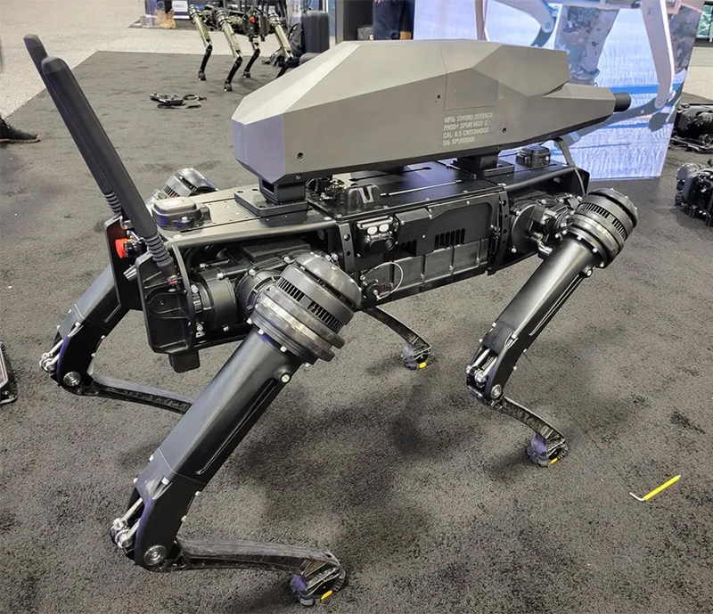
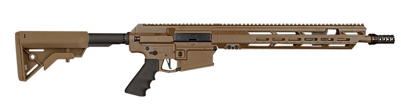
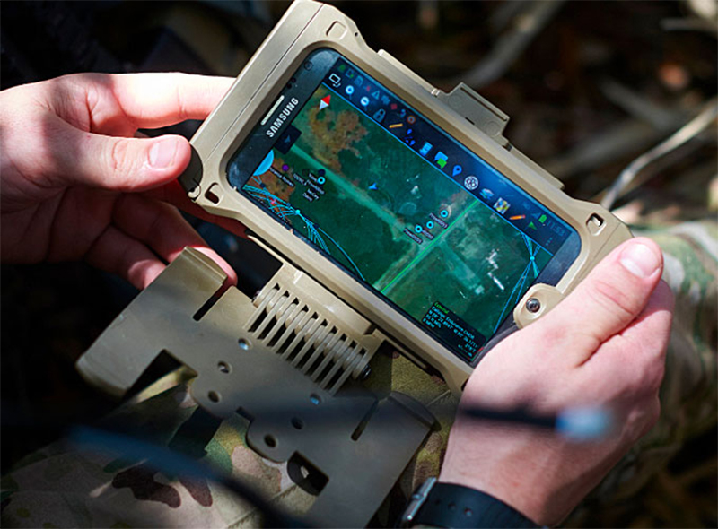

සෘජුකෝණාස්රාකාර රොබෝ බල්ලන් නිර්මාණය කිරීමේ කතාව වසර කිහිපයක් පැරණි උවත්, එම බල්ලන්ගේ උරහිස් වලට සවි කරන ලද රයිෆලයක් සහිතව උන්ව දකින්නට ඇතැම් විට ඔබ නොසිතන්නට ඇති.
නමුත් පසුගිය සතියේ ඇමරිකාවේ Washington DC හි පැවති ඇමරිකා එක්සත් ජනපද හමුදාවේ 2021 වාර්ෂික සම්මේලනයේදී, ලොව පළමු වතාවට රයිෆලයක් පිටේ බැඳගත් නව රොබෝ බල්ලෙකු දැක ගැනීමට හැකියාව ලැබුනා.

Ghost Robotics නම් ඇමරිකානු මිලිටරි උපකරණ නිපදවන සමාගමක් විසින් නිපදවා තිබූ මෙම රොබෝ බල්ලාට සවිකර තිබුනේ සුප්රකට යුධ උපකරණ නිපදවන සමාගමක් වන Sword International විසින් නිෂ්පාදනය කරන ලද 6.5mm Creedmoor වර්ගයේ රයිෆලයක ක්රියාවලිය මත පදනම් වූ වැඩි දියුණු කරන ලද අවියකි.

මෙම රයිෆලය 30x optical zoom සහිත කැමරා කාචයක්, අඳුරේදි පවා ඉලක්කය ලබා ගත හැකි උෂ්ණත්ව සංවේදකයක් හා 1,200m ක වපසරියක ඇති ඕනෑම ඉලක්කයක් ලබා ගත හැකිවෙන ලෙස නිපදවා තිබෙනවා.
නමුත් මෙම රොබෝ බල්ලාට එක් වරකදී කොතරම් පතරොම් ප්රමාණයක් රැගෙන යා හැකිද සහ පතුරම් අවසන් වූ පසුව නැවත පුරවා ගැනීමට කොපමණ කාලයක් වැය වේද ආදී තොරතුරු තවමත් අපැහැදිලියි.
ඒ වගේම සෙබලෙකු විසින් වෙඩි තබනවා හා සමානවම, Android Team Awareness Kit (ATAK) මෘදුකාංගය ඔස්සේ දුරස්ථව මෙම system එක ඔස්සේ වෙඩි තැබීමට හැකියාව තිබෙන අතර මෙම මෘදුකාංගය Tab එකක් වැනි හමුදාමය උපකරණයකට install කිරීමෙන් අනතුරුව, ඒ ඔස්සේ රොබෝ බල්ලා සතු කැමරා වලට ප්රවේශය ලබා ගැනීමටද හැකියාව තිබෙනවා.

ඒ වගේම AI තාක්ෂණය ඔස්සේ යම්කිසි ඉලක්කයක් හඳුනාගෙන ඉලක්කය Lock කිරීමේ හැකියාව මෙම රොබෝ බල්ලාට ඇති නමුත් ස්වයංක්රීයව වෙඩි තැබීමේ හැකියාවක් නැහැ. වෙඩි තැබීමේ විධානය ලබාදිය හැක්කේ මිනිසාට පමණයි.
මෙවැනි හැකියාවකින් සමන්විත රොබෝ බල්ලෙකු නිර්මාණය කිරීමේ අරමුණ බොහෝ දුරට සෙබලෙකුව ස්ථානගත කිරීමට නොහැකි දුෂ්කර ස්ථානනයක භාවිතා කිරීම විය හැකි වුවත්, යුධ උපකරණ යනු සෑම විටම විනාශය ගෙන දෙන දේවල් බැවින්, නවීන තාක්ෂණික රෝබෝවරුන් අනාගත ලෝකයට කෙසේ බලපෑම් කරනු ඇද්දැයි යන කරුණු මත පිහිටමින් බෝහෝ විශ්ලේෂකයින් මෙම නව තාක්ෂණය පිළිබඳව කණස්සල්ල පළ කරනවා.
වැඩිදුර විස්තර :- The Verge වෙබ් අඩවිය,
Independent වෙබ් අඩවිය,
Technews වෙබ් අඩවිය, භාවිතා කළ